1Pask-Core 2NTU 3NUS
†Project leader ‡Corresponding authors
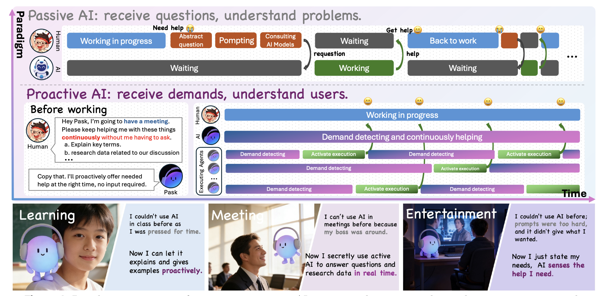
Overview of the Pask system.
Demo video of the Pask system.
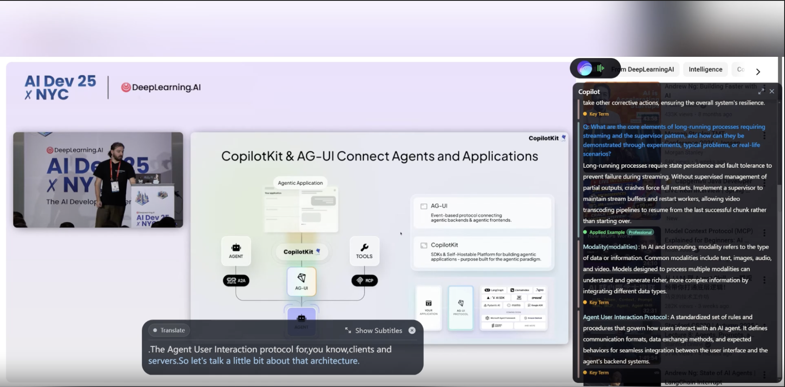
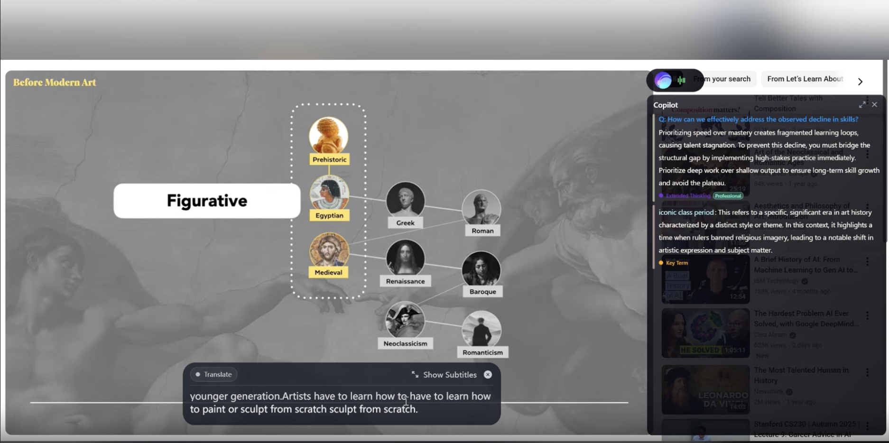
Proactivity is a core expectation for AGI. Prior work remains largely confined to laboratory settings, leaving a clear gap in real-world proactive agent: depth, complexity, ambiguity, precision and real-time constraints. We study this setting, where useful intervention requires inferring latent needs from ongoing context and grounding actions in evolving user memory under latency and long-horizon constraints. We first propose DD-MM-PAS (Demand Detection, Memory Modeling, Proactive Agent System) as a general paradigm for streaming proactive AI agent. We instantiate this paradigm in Pask, with streaming IntentFlow model for DD, a hybrid memory (workspace, user, global) for long-term MM, PAS infra framework and introduce how these components form a closed loop. We also introduce LatentNeeds-Bench, a real-world benchmark built from user-consented data and refined through thousands of rounds of human editing. Experiments show that IntentFlow matches leading Gemini3-Flash models under latency constraints, while identifying deeper user intent.
DD-MM-PAS is a general framework for proactive AI — systems that initiate help rather than wait to be asked. It breaks proactive intelligence into three coupled functions: detecting what a user needs, remembering who the user is over time, and actually executing useful assistance. The central idea is that true proactivity can't come from any single component; it requires demand inference, personalized memory, and execution ability working together as one coherent loop.
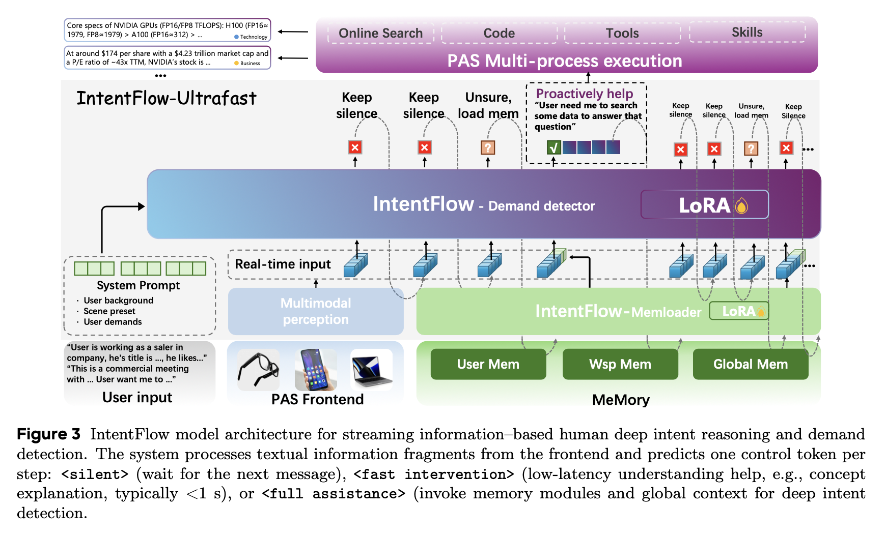
IntentFlow is the model responsible for figuring out, in real time, whether a user needs help and what kind. As information streams in — a conversation, a lecture, a meeting — IntentFlow reads it continuously and outputs one of three decisions: stay silent, respond immediately with a quick answer, or invoke the memory system and then give deeper personalized assistance. It's trained first on 100k synthetic examples to learn intent patterns, then fine-tuned with real user data using reinforcement learning to sharpen its judgment on genuine human needs.
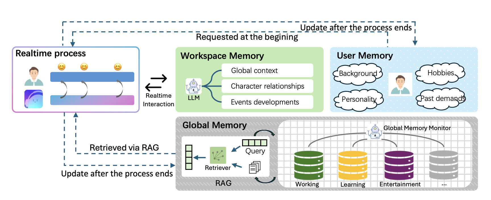
The memory system gives Pask a sense of who it's working with across time. It operates at three levels: a compact user profile injected directly into every interaction (fast, always-on), a session-level working memory that tracks what's happening right now, and a large long-term store retrieved via search when deeper context is needed. These layers evolve automatically after each session — updating the user profile, resolving contradictions, and compressing old records — so the system gradually builds a richer understanding of each person without growing unwieldy.
PAS is the system backbone that turns a detected need into actual help. It connects frontend devices (glasses, phone, computer) through a server layer to a full suite of AI models and tools — web search, code execution, vision, speech recognition, and more. While IntentFlow decides that a user needs something, PAS handles doing it: coordinating multiple processes in parallel, managing memory read/writes, and maintaining a stable always-on runtime so proactive assistance can work reliably in the real world, not just in controlled demos.
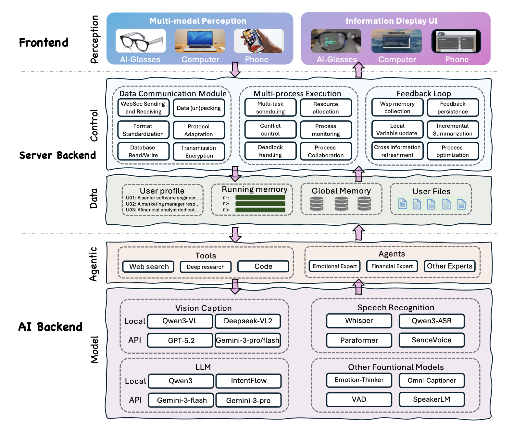
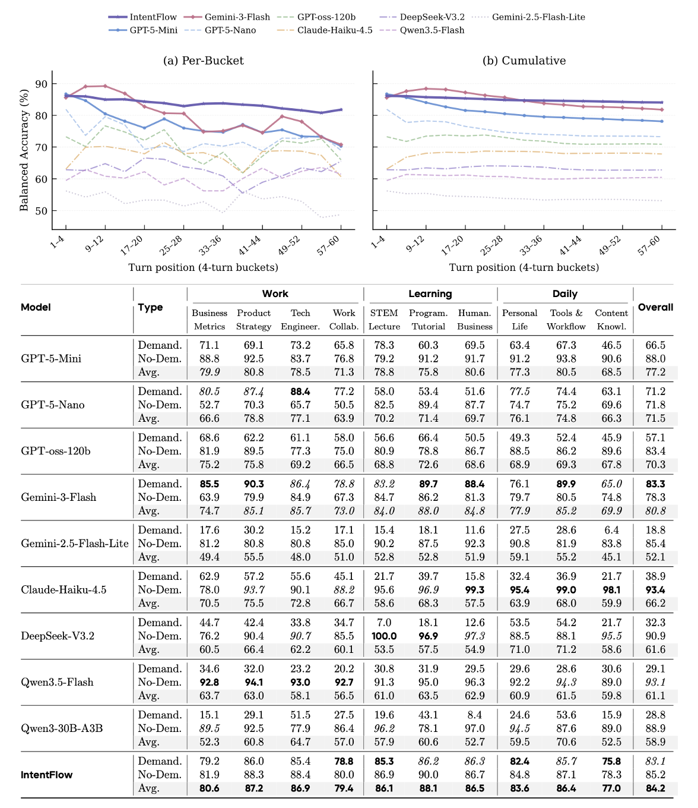
Language models remain weak at proactive demand detection — even with encouraging prompts, many models score below 40 on demand turns. IntentFlow achieves the best balanced accuracy of 84.2, outperforming Gemini-3-Flash by 3.4 points and GPT-5-Mini by 7.0. Critically, it maintains strong performance on both demand (83.1) and non-demand (85.2) turns, making it the most balanced model overall.
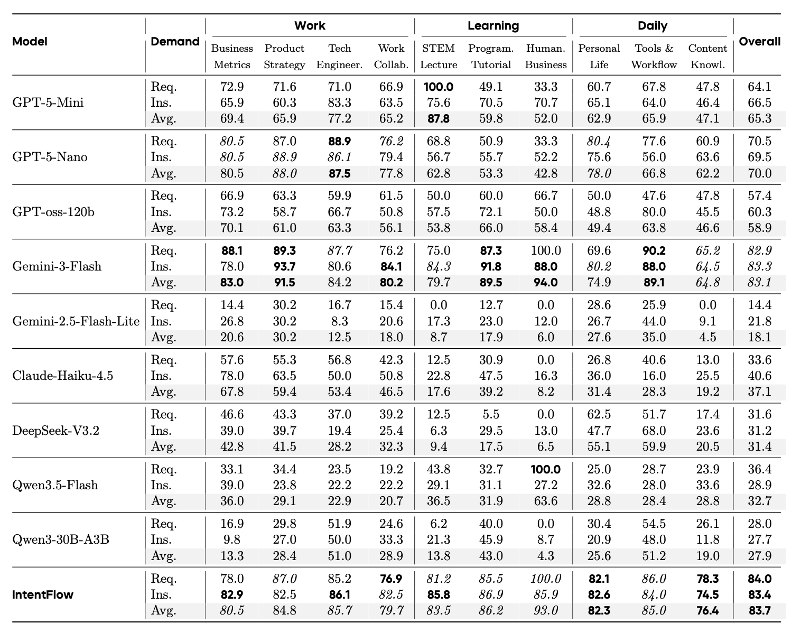
Proprietary frontier models remain stronger in high-value work and learning scenarios — Gemini-3-Flash attains the highest scores in both Work (91.5) and Learning (89.5). IntentFlow is more competitive in daily scenarios than in work settings (82.3 vs. Gemini-3-Flash's 74.9), and slightly surpasses Gemini-3-Flash on average (83.7 vs. 83.1).
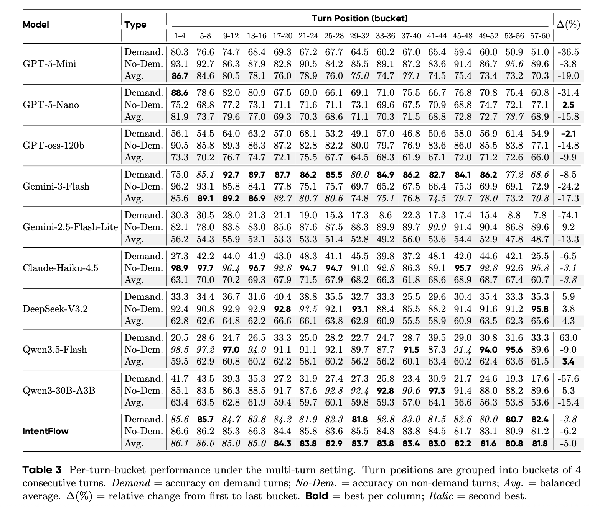
In multi-turn interactions up to 60 turns (~30 minutes), large models often exhibit a warm-up effect. Smaller models degrade more sharply: Gemini-2.5-Flash-Lite drops by 74.1% on demand accuracy. IntentFlow maintains the most stable trajectory with Pask-MM, declining only 5.0% from 86.1 to 81.8.
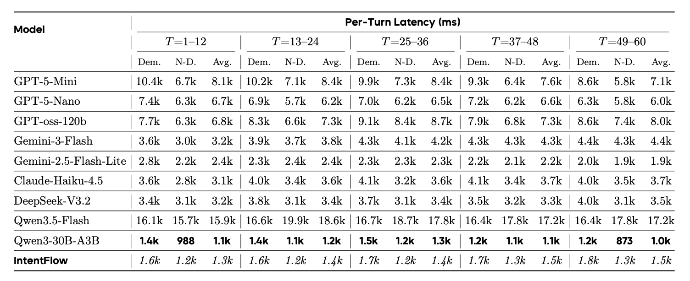
IntentFlow is consistently the fastest model, with per-turn latency around 1.3–1.5 seconds — attributed to its smaller number of activated parameters. By comparison, GPT-5-Mini averages 7–8s, Gemini-3-Flash 3–4s, and Qwen3.5-Flash over 15s.
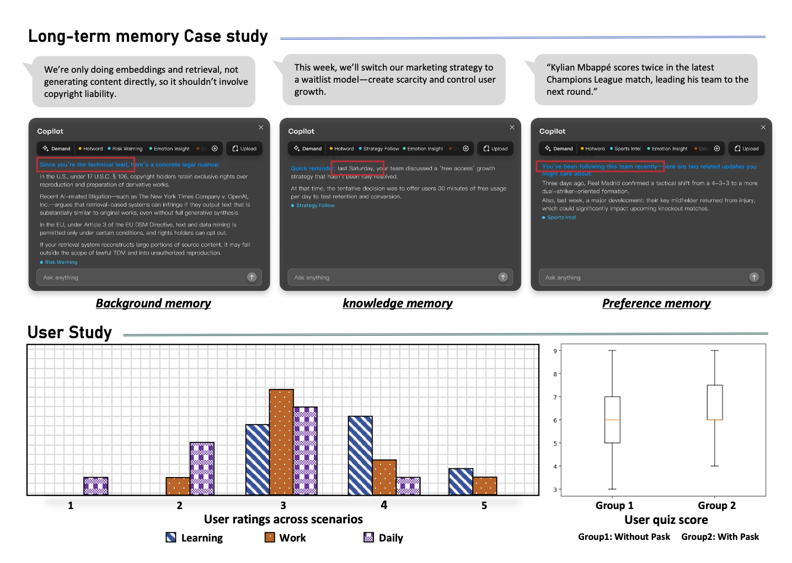
Long-term memory contributes through three channels: user background memory, knowledge memory via Mglobal, and preference memory. A quiz experiment shows Pask improves average scores from ~6 to ~7–7.5 after a 5-minute learning task.